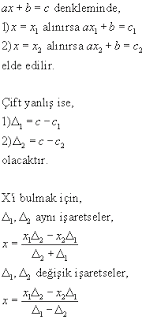
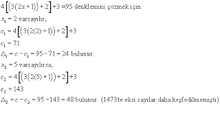
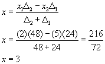

Cebirde Çift Yanlış Yöntemi - Ali Kuşçu
(Aşağıdaki makale, ünlü Anadolulu matematikçisi Ali Kuşçu'nun Fâtih Sultan Mehmet'e 1473 tarihinde sunduğu eserinden alınmıştır. Eserin ismi el-Muhammediye fi el-hisab'tır. Çift yanlış yöntemi, doğrusal denklemlerde bilinmeyen(ler)i hesaplamak için kullanılmaktaydı.
Makale, dil ve matematiksel simgeler olarak günümüze uyarlanmıştır). Çift yanlış yöntemi, bilinmeyeni dilediğimiz herhangi bir sayı varsaymamız ve üzerine sonuca ulaşana değin soranın sözünden anladığımız şekilde işlem yapmamızdır. Sonuç bilinen sayıya uyuyorsa istenen sayı odur. Uymuyorsa yaptığımız işlemden hâsıl olan ile bilinen sayı arasıdanki farkı alırız. Bu birince yanlış olarak adlandırılır. Sonra bilinmeyeni başka başka bir sayı varsayarız. İkinci bir sonuca ulaşana dek yaptığımız işlemleri ona da uygularız. Sonuç bilinen sayıya uyuyorsa istenen o sayıdır. Uymuyorsa onun ile bilinen sayı arasındaki farkı alırız. Bu da ikinci yanlış olarak adlandırılır. Daha sonra iki yanlıştan bir doğru çıkartılır. Şöyle ki: Birinci varsayılan ile ikinci yanlış, benzer biçimde ikinci varsayılan ile birinci yanlış çarpılır. Her iki yanlış beraberce bilinen sayıdan artık ya da eksik ise iki çarpım sonucunun farkını iki yanlışın farkına böleriz. Bu işlemden çıkan sonuç talep edilen bilinmeyen sayıdır. Artıklıkta ve eksiklikte muhtelif iseler iki sonucunun toplamını iki yanlışın toplamına böleriz. Çıkan sonuç talep edilen sayıdır [1]. Çok basit bir örnek Ve buradan ikinci förmüle göre,



Kaynakça
[1] Kutadgubilik Felsefe ve Bilim Araştırmaları Yayını, Mart 2003 Sayısı